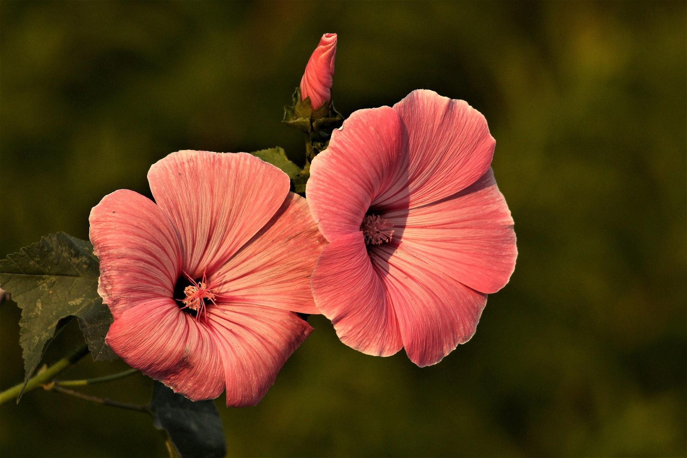

I love flowers. Flowers are pretty. There are two flowers. They are pink. There is a pink background. How many flowers does it take to make a garden. What if they were purple flowers. What do they smell like. Bees like flowers and so do butterflies. Animals are cool. They like to be in the wild. They like nature. Nature is mainly made up of greenery. I like to look at the leaves and smell the plants.I wonder how many different types of flowers grow in the world. Some flowers are big, and others are very small. Some grow in gardens, while others grow in fields, forests, and even near the ocean. I like how flowers come in so many different colors, like yellow, red, orange, pink, and purple. Each flower has its own shape, color, and smell. When I walk outside, I enjoy seeing the trees, flowers, and plants growing around me. The leaves move when the wind blows, and the flowers dance in the breeze. Sometimes I wonder what it would be like to live in a garden full of colorful flowers. Birds could sing in the trees, butterflies could fly around, and bees could collect nectar. Nature is a beautiful place because everything has its own purpose. Plants provide food and shelter for many animals, and trees give us shade on sunny days. I think spending time outside is relaxing because there are so many beautiful things to see, hear, and smell.